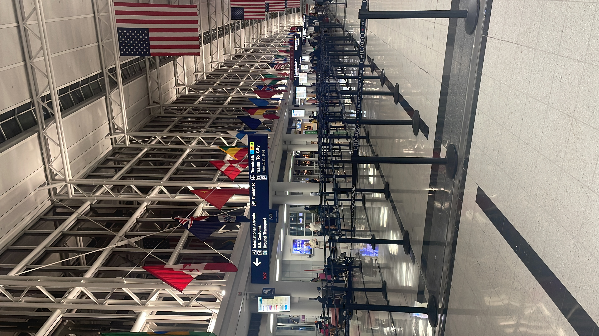
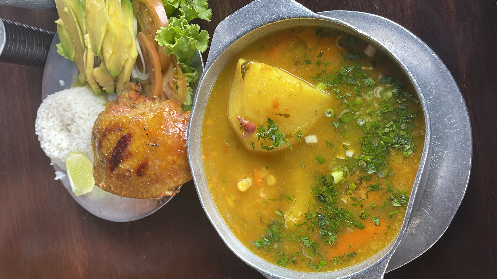
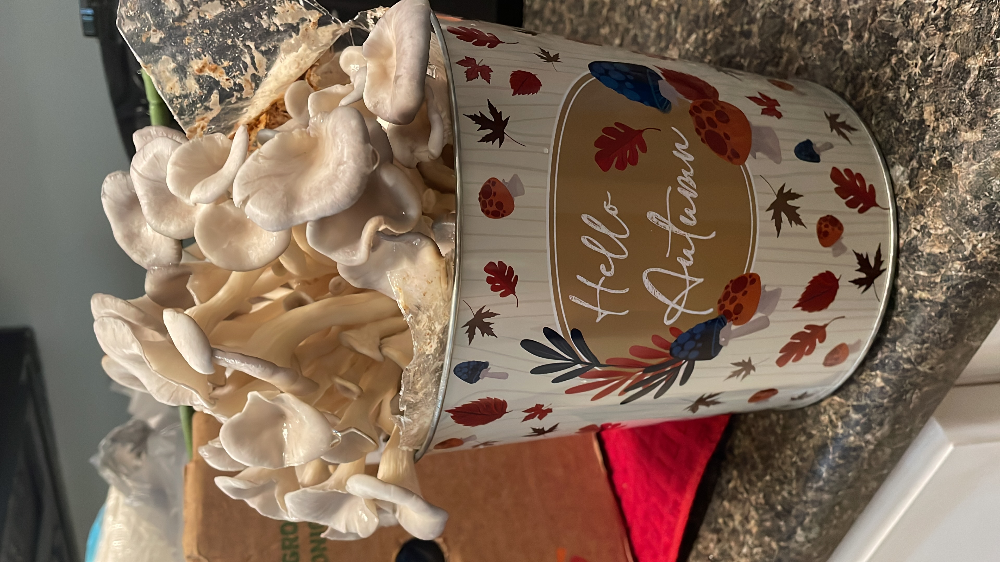
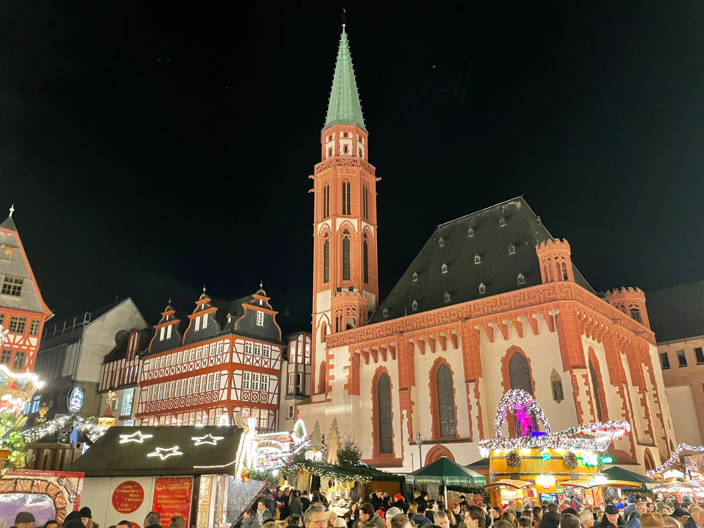
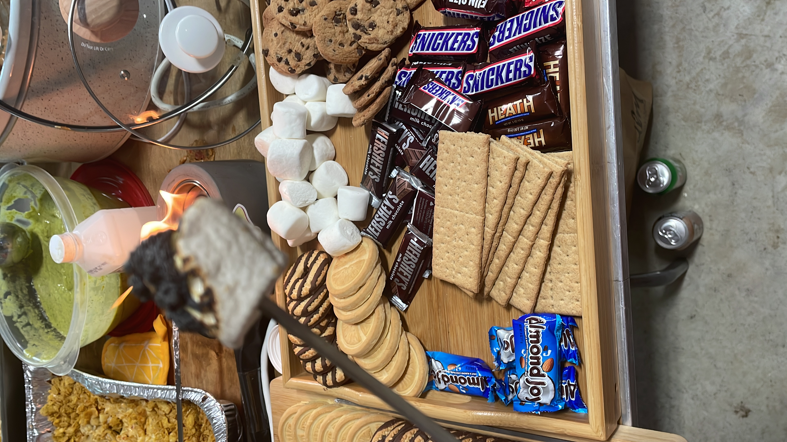
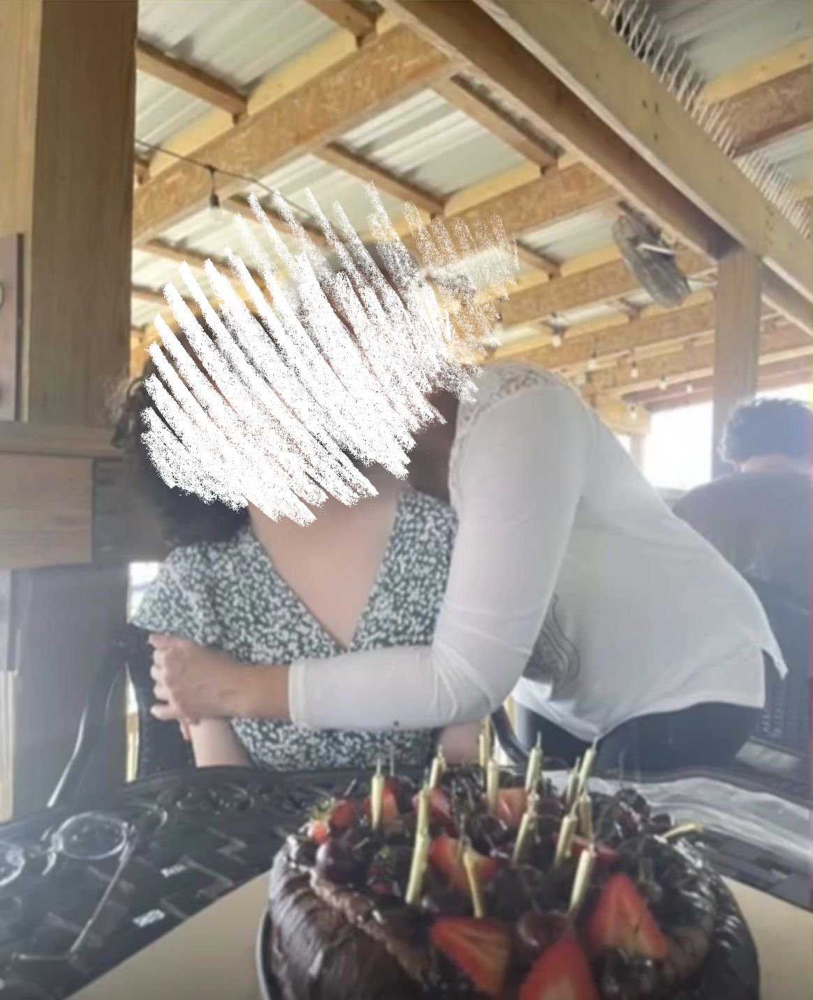

But the most important thing is that photography helps me to appreciate the little moments in life. Whether it's a beautiful sunset, a candid shot of a friend, or a quiet moment of reflection, I find joy in capturing these fleeting instances. Each photo tells a story and holds a memory, and I cherish the ability to freeze time and relive those experiences through my lens.

This picture for example, was my last photo in the US, before I left for my journey. It holds a special place in my heart as it captures the emotions of that moment.

This picture was taken in a small restaurant in Venezuela, where I had the most delicious soup I've ever tasted. The steam rising from the bowl and the vibrant colors of the ingredients made for a visually appealing and appetizing photo.

This picture was taken last year during fall season, and it showcases my first mushroom cultivation, which was a rewarding experience. I learned a lot about the process and was thrilled with the results! After my fungi grew, I was able to harvest them and use them in a delicious meal with my mom.

This picture was taken long time ago, during winter in Germany with my big brother. I was fascinated by the intricate details and craftsmanship of the architecture, and I wanted to capture that beauty in a photograph. That was a memorable picture for me, and this photo brings back fond memories of exploring the charming streets and enjoying the winter atmosphere.

This picture was taken this year (2025) during summer in a party that my friends organized together. I was really excited to try these sweets, as they looked so colorful and delicious! I also ate a lot of them! Specially some really good s'mores. Aw man, they were amazing and so tasty. ^^

Old pictureee. Like 2021 or something. I was just a teen back then! This photo was taken on my 16th birthday, and it brings back so many memories of that special day. The person by my side is my mom, the funny thing of this one is that I was smiling with a weird expression in my face, and my mom was squeezing me all the time, which was quite awkward but also lovely.